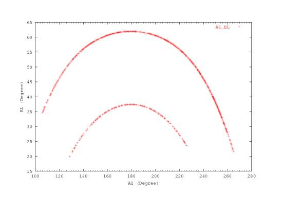
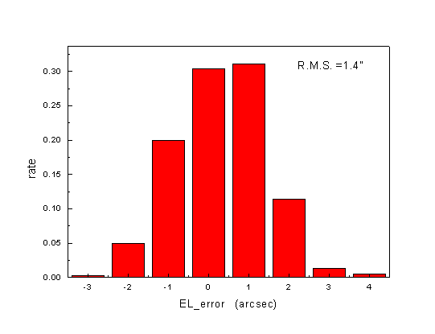
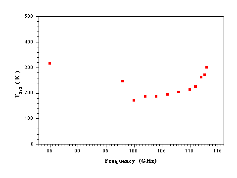

13.7米毫米波望远镜2003-2004观测季节
状态报告
( Status Report on the 13.7m Mm-Wave Telescope
for The 2003-2004 Observing Season )
德令哈毫米波观测基地
2003年10月22日修改稿
一， 系统状态概况
2003年夏季维护更新季节（6月-9月），德令哈毫米波观测基地与毫米波亚毫米波技术实验室合作、协助南京天仪厂，对13.7米毫米波望远镜进行了更新改造和天线机械系统的检修，完成了本观测季节所有的计划检修项目，这些工作主要包括：
（1）、 在这个维修季节，以PDP计算机为平台的旧控制系统彻底退出了历史的舞台，自主开发的基于PENTIUM/PCI工控机+RT-LINUX操作系统+C /C++工作语言为平台的新的控制系统代替了它的所有工作。除此以外还基地还开发了望远镜测试所需要的系列软件。除了满足望远镜常规维护的测试目的以外， 这些软件可以在观测者对系统任何部分的性能产生兴趣时做必要的测试。
（2）、通过实验室和基地的协同努力，在上一个观测季节安装运行可同时接收12CO (J=1-0)、13CO(J=1-0)、C18O(J=1-0)等三条谱线并分别具有1024通道的“多谱线系统”的基础上,本季度更换了AOS-III路原国产偏转器，彻底解决了AOS-III路（12CO (J=1-0)）噪声偏大的问题。目前12CO谱线路的噪声情况已符合天文观测要求；还消除了观测过程中的数据传输故障，运行可靠性观测效率得到明显提高。
（3）、 由天仪中心主持对望远镜天线机械系统进行了维护检修。天线主面面板总共进行了四轮调测。480个靶点全都达到了误差在3″以内，经口面面积加权和照明加权后的主反射面安装测量误差为0.070mm，调整后的口面效率为68%。望远镜最终效率决定于该面板效率与波束传输、光路耦合效率的乘积。
（4）、 在上个观测季节，IF1路中的2530MHz±5MHz频综、IF2路中的2110MHz±5MHz频综在运行过程中会出现失锁和错锁现象。经过夏季维护阶段的大量测试，提出了改进方案，并进行了实施：由原来的工控机RS232串口送频率数给IF系统内单片机AT89C2051实现IF1路 2530MHz±5MHz频综和IF2路2110MHz±5MHz频综的跳频，改为用工控机打印口经过驱动整形电路直接控制IF系统IF1路 2530MHz±5MHz频综、IF2路2110MHz±5MHz频综，失锁和错锁现象已消除。
（5）、本维护季节，基地研制了新的斩波轮系统，实现了在观测过程中斩波轮可靠、快速响应的目标，达到了提高观测效率的目地。
（6）、整理了控制系统软件结构，清除控制软件Bug， 解决控制系统通讯故障。
（7）、更新多路接口与控制系统间的电缆。
（8）、更新了基地所有的配电设施和主要供电线路。
（9）、完成了基地实验室、办公室和招待所的装修。
二， 望远镜主要性能及简要说明
1， 天线及表面精度
德令哈基地毫米波望远镜口径为13.7米(45英尺)。望远镜的光学系统是典型的卡塞格林系统，望远镜以地平式安装，接收机工作在卡焦上。主反射面的表面精度为70微米。
2， 望远镜指向和跟踪
目前，望远镜进行指向观测的主要手段是对行星（火星和木星）进行五点式扫描。取得足够的观测数据以后用指向解析模型进行拟合。指向测试在开机阶段进行2-3轮观测和拟合，在观测季节内每1-2个月进行一次。示例的是行星观测的数据点分布，图2.2.2示例的是误差分布。

图2.2.1 观测得到的所有有效数据点在天空中的分布，俯仰高的是JUPITER轨迹,俯仰低的是MARS的轨迹。数据取自2003年10月5日。
2.2.2 五点强度拟合后得到的本轮观测实际方位残差和俯仰残差的图示。图中椭圆的长半轴为7.35″，短半轴4.55″，PA为36.5。数据取自2003年10月5日。
结果显示，目前望远镜的指向误差(rms)为7.35″。望远镜的指向状况还通过观测谱线点源（例如IRC+10216）或者具有明显局部空间分布特征的部分面源（如S140等）来不定期地加以验证。
新控制系统采用的PID 控制量计算方法。经过大量测试，获得了最佳控制量参数。测试表明，对绝大部分天区的跟踪误差在2”左右，完全符合观测要求。根据望远镜的波束大小，观测时的望远镜跟踪误差允许范围也被限制在7"以内，以保证足够的精度。图2.2.3和图2.2.4为天线的跟踪误差测试结果：
图2.2.3 方位的跟踪误差统计分布图（从246o到252o）

图2.2.4 俯仰的跟踪误差统计分布图（从47.5o到42.5o）
3， 望远镜的效率参数（波束宽度、孔径效率、波束效率）和温标
对木星进行二维扫描观测，测量望远镜的波束宽度和效率。图2.3.1显示的是望远镜波束的分布（方向图）。图2.3.2显示的是望远镜波束的分布（方向图）。
图2.3.1 对木星二维扫描的得到的强度分布，天线方向图是该图与当日木星的尺寸去卷积。
图2.3.2 对月亮二维扫描得到的强度分布。
观测结果表明，望远镜波束宽度为106"×70"。主波束效率hmb为42.12%，月面效率为77.39%。
本望远镜采用标准的斩波轮校准方法(Ulich & Haas 1976; Kutner &Ulich 1981)，给出的温标是改正了大气吸收后的“天线温度“，也就是文献上的TA*。原始数据中未进行效率改正。观测者在进行银河系分子云等面源观测中，得到源的天线温度后，需按照 的关系计算TR*。该温标是源的亮温度与波束的卷积，它是与同类望远镜近似可比的温标。
本观测季节我们在测试中继续证实了，望远镜光学系统随俯仰高度变化显著。一部分原因是望远镜面板需要调整。该项工作已经在2003 年夏季维护季节完成。另一部分原因是结构性的（由原有的设计所决定）。本望远镜的副镜重量大、副镜支撑随俯仰高度的重力弯沉效应显著。这一效应使得天线与 接收机光学系统的耦合在不同的俯仰高度发生变化，使波束发生不对称（象差），使效率发生变化。我们在发现这一现象以后，目前的观测主要集中在 EL=35o-75o的范围内进行观测，同时，基地将继续进行副镜重力弯沉的测试。在实验的基础上对副镜实行主动式控制，实时补偿副镜的重力弯沉带来的光 学耦合变化。
4， 接收机的参数（频率工作范围、灵敏度、和稳定性）
13.7米望远镜目前使用一台3mm波段的超导SIS接收机。按照标准的波段设置要求，理论上该波段的接收机工作频率范围应当在85-115GHz。使用中的接收机本观测季节在f(LO)= 99-114GHz范围内接收机的噪声温度的实测值为70-128K(DSB)。包含大气贡献在内的系统温度分布在图2.4.1中显示。该系统温度数据有助于课题申请人估计项目观测所需要的积分时间和灵敏度。

图2.4.1. 系统温度随接收机本振频率的分布。横坐标是接收机的工作频率，纵坐标是双边带工作方式下测量的系统温度, Tsys(DSB, K)， 它包括了接收机、天线与光学系统、圆顶和蒙皮、以及地球大气的贡献。数据测量时间是2003年8月。系统温度随工作频率的分布可用估计观测的积分时间。86—98GHz由于量子台阶较平，工作点不能稳定偏置，输出功率不稳定，故没有进行测试。
接收机在每个典型的谱线积分时段 (~10min) 增益的相对稳定性对f(LO)= 99-114GHz高频端达到(DG/G) ￡5′10-3这一天文观测所要求的灵敏度，如图2.4.2所示。从图也可以看到，在低频端的接收机表示出幅度较大的增益起伏。所以，我们提醒观测者在选择f(LO)低于99GHz的本振工作频率时要格外注意。接收机技术上的部分原因目前也正在协同毫米波技术实验室一起设法克服。
图2.4.2. 接收机中频总功率输出的相对稳定性随前端本振工作频率的分布。横坐标表示本振的工作频率，纵坐标表示总功率随时间的起伏与其平均值之比，用以度量接收机增益的相对稳定性。测量时间是2003年8月20-21日，每个频率点数据采样持续10分钟（=典型的后端积分时间）。
5， 后端频谱仪的主要技术参数（带宽、信道数、分辨率、稳定性）
毫米波亚毫米波技术实验室于2003.8.13~22日在青海站对原接收 分子谱线的A0S-III系统（中心频率为225MHz）进行了技术改造，采用新的声光偏转器和新设计的光路系统组成A0S-III系统。
表2.5.1 列出了这3个AOS后端的基本参数。其中AOS-I和AOS-II为去年新增的后端，AOS-III为今年8月份重新更换的中带宽频谱仪，由于该AOS光学系统的调整，带宽从原先的170MHz变窄为现在的145MHz。需要提醒的是，实际中，仪器随工作环境的微小变化，例如温度，会导致表2.5.1中的 参数也发生变化。观测基地要经常性地进行频率定标测试。在每次常规测试以后，最新的准确数值将在观测数据FITS文件中及时更新，以便保证数据中反映的参数是最新的。
表2.5.1 望远镜频谱后端AOS的基本参数
|
后端名称 |
带宽 |
通道数 |
通道频率
分辨率平均值 |
|
AOS-1（13CO）
（110.2013529GHz） |
42.87MHz |
1024 |
78.7KHz |
|
AOS-2（C18O）
(109.7821819GHz) |
43.3MHz |
1024 |
75.7KHz |
|
AOS-3（12CO）
(115.2712039GHz) |
145.43MHz |
1024 |
209KHz |
当本振频率设置在F(LO)=112.6 GHz时，这3个AOS后端可以同时使用，分别接收12CO(J=1-0)、13CO(J=1-0)以及C18O (J=1-0)的三条谱线，这时AOS-I和AOS-II工作在下边带，而AOS-III工作在上边带。这种仪器设置的构型为三条谱线的巡天提供了极大的 方便。同时，由于三条谱线的同时接收，在很大程度上消除了大气变化带来的测量不确定性，提高了测量精度。图2.5.1示意的是三条谱线同时观测得到的谱线。
观测者也可以在接收机工作波段的任何别的本振频率下选择这3个后端中的1至3个频谱仪来工作，并且可以根据大气变化情况和接收机工作状态选择最佳的本振工作频率和边带。观测课题明确了观测频率的需求以后，可以向基地为该开放观测研究项目指定的观测助手咨询仪器设置和选项具体的具体方案。
图2.5.1 L134原始谱进行一次拟合后的谱线。横坐标是谱线速度。蓝线是12CO谱，绿色线是13CO谱，红色线是C18O谱。
6， 数据定标和数据精度的检验
望远镜作为一个整体，它对标准天体进行观测的数据精度通常用来反映天文观测能够达到的实际测量精度。我们用该精度作为对整个望远镜观测系统仪器性能、工作状态、观测方法、以及数据归算处理等全过程的标准量度。
我们对常用的天体毫米波谱线标准源进行了系统的观测。从本季节开始到现在，我们对L134的12CO、13CO和C18O谱线的监测得到TA*的相对精度分别为3.28%、6.6%和17%，它代表了这段时间数据的整体精度水平。
7， 观测模式
· 在上述接收机工作频率范围内，望远镜以双边带下的位置开关模式进行谱线观测，单点观测或者成图观测。
· 谱线观测采用标准的斩波轮方法定标。
· 可以使用多谱线系统同时观测CO及其同位素的谱线。
· 可以进行大气不透明度的测量。
· 可进行连续谱的波束调制和成图观测。
8， 成图(Mapping)效率
成图观测(Mapping) 是常用的面源观测方式。目前的成图观测主要是用望远镜的单一波束逐点扫描来进行。除系统温度决定的灵敏度或积分时间以外，观测过程中的天线跟踪运动、斩波轮开关、数据I/O等操作也产生一部分时间损耗。经过测试，目前Mapping模式下该效率因子为1.5。观测者在课题所需实际观测时间的计算中应将目标 -参考源的时间总和乘以该因子。
9， 资料格式
更新后的控制系统输出数据为国际通用标准的FITS格式。头部信息中的关键字符合GILDAS/CLASS处理软件的需要。基地也提供将以往13.7米望远镜使用的DRAWSPEC格式转换为FITS格式的软件，通过基地网页下载。
三， 开放观测课题的申请
2003-2004观测季节13.7米毫米波望远镜的对外开放观测服务从2003年10月15日起开始。该观测季节预计将在2004年6月结束。
德令哈基地13.7米毫米波望远镜最新状态和详细技术报告将及时公布在基地网页：http://www.pmodlh.ac.cn上。
德令哈毫米波观测基地热情邀请国内外专家使用该望远镜从事天文和相关科学的观测研究。13.7望远镜常年接受观测课题申请。所有观测申请均由proposal@pmodlh.ac.cn加以受理。观测申请的格式文本可以从基地网页下载。申请的观测课题或者时间要求在出现竞争的情况下将完全经由“毫米波评议会”的专家根据申请项目的科学意义 和项目可行性进行打分评议，确定优先级。毫米波评议会的专家目前由南京大学、北京大学、北京师范大学、上海天文台、以及国家天文台的同行专家组成，今后还将聘请部分海外专家担任毫米波评议会专家。
对所接受的观测课题申请，德令哈观测基地将以正常的仪器状态积极协助天文学家完成观测。基地为每一个观测课题配备天文观测助手。基地将根据观测课题的要求，及时安排观测时间并提前通知观测课题的PI 或者联系人。通知观测课题的同时也为每个观测项目指派具体的天文观测助手。部分观测课题特别需要时，基地也接受委托观测。尽管如此，基地还是强烈建议：观测者，特别是还不十分熟悉毫米波望远镜观测的研究人员和学生，能来基地参加观测，在了解毫米波射电天文观测的一般过程的同时，也有机会熟悉13.7米毫米 望远镜的特点，把握观测数据的质量。
四， 可以从事的观测课题举例
1， 银河系分子云物理结构的探测；
2， 年轻星的高速气体外流和动力学；
3， 星际化学；
4， 银河系恒星形成区内分子气体的分布；
5， 银河系动力学；
6， 恒星演化和晚型恒星的分子气体观测；
7， 太阳系天体的分子谱线观测；
8， 月球的毫米波连续谱辐射性质的观测研究；
9， 地球大气的毫米波电波传播和辐射物理性质的观测研究；
五， 使用望远镜进行观测
1， 观测准备
· 观测者从科学目标出发，准备观测源的基本信息，包括目标源的坐标、速度、尺度、参考背景的坐标、所需要的探测极限和积分时间估计等。
· 从本观测季节开始，基地提供成图观测的Tck/Tk制表程序dtg.tcl。观测者可在基地相关网页下载该程序来制表。使用该制表程序有困难者也可以到基地以后再行制表。
· 基地指派的天文观测助手将协助观测者进行必要的观测准备，包括介绍设备情况、提供仪器选项的咨询、协助制表、协助观测、协助数据处理、提供数据备份等。
2， 观测
望远镜值班操作人员是唯一授权进行望远镜和相关仪器的操作。他们根据工作日程进行观测，及时向课题观测研究人员反映仪器的状态，直到完成观测。
在观测过程中，项目观测研究人员及基地指派的观测助手对获得的数据内容和质量进行核查，及时对操作提出要求。
必要时，值班操作人员可根据仪器状况建议观测者调整观测内容。
基地备有观测操作的使用手册，以方便来基地的课题观测研究人员了解和核实操作员的操作内容。基地今后将不定期地举办讲习班和观测操作培训。经过观测操作培训的外单位工作人员和研究生有可能获得授权在他们的观测项目执行过程中操纵望远镜。
3， 数据处理、数据备份
基地为观测研究人员准备了优质、可靠、实用方便的数据处理操作平台，以SUN BLADE 2000、SUN ULTRA-10、SUN SPARC-5、以及LINUX工作站为硬件平台，以IRAM开发和维护的GILDAS/CLASS作为基地处理毫米波谱线数据的标准软件。观测数据可在基地即时处理。基地指派的天文观测助手将协助观测者熟悉数据处理的操作。
基 地指派的天文观测助手将负责为观测者备份光盘数据。观测者也可以通过基地网络将数据传送回自己的研究所。基地将为所有观测项目备份其原始数据。根据国际惯例，课题观测的所有数据将由课题申请者独占使用一年后成为开放共享数据。跨年度的长期项目在观测结束日起满一整年以后成为开放共享数据。
4， 交通与生活服务
基地将为所有观测人员做好迎送接待、食宿、交通、网络通讯、应急供氧等支撑工作。2003 年夏季，基地完成了办公和招待所的装修，工作和住宿环境得到了明显改善。前来基地从事观测课题研究的人员食宿交通等费用自理。同样,由于地处西部，交通不便。我们推荐前来基地观测的研究人员事先计划安排好车（机）票。目前，当地铁路部门尚未将由德令哈往返附近中转城市的车票纳入全国铁路车票预订网络，车票 在本地订购。为此，在基地网页上我们公布有基地在西宁的接待号码，该接待处协助购买从西宁至德令哈的车票。从兰州中转时，也可以根据网页上提供的电话号码与基地协议单位联系订票。从基地返回到上述两个中转城市的车票均由基地帮助解决。
德令哈基地地处青藏高原，干燥缺氧，冬季气候寒冷。基地提醒前来工作的天文学家做好充分的适应准备。
六， 意见建议、或进一步的联系咨询
需要了解基地望远镜更多内容、提出意见或建议者请与基地杨戟研究员联系：jiyang@pmodlh.ac.cn或jiyang@pmo.ac.cn；电话：(0977)8224972或者 (025) 3306865。对本报告有关内容的质询也请发给上述地址。观测项目实施以后，欢迎研究人员对观测中的天文和技术问题以及各种观测服务工作出现的问题等提出意见和建议。在基地网页上也公布有基地全部工作人员的联系电话和Email地址。